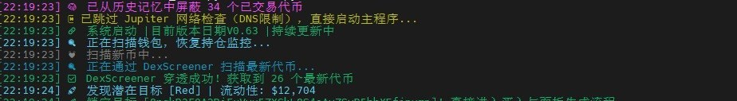
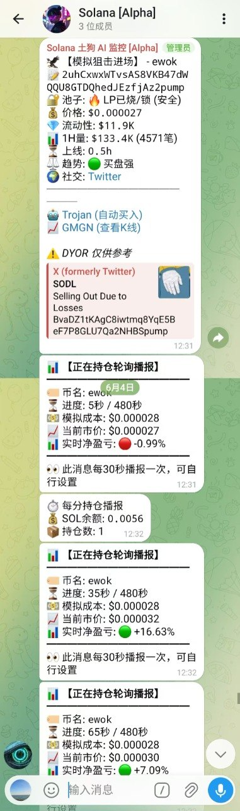
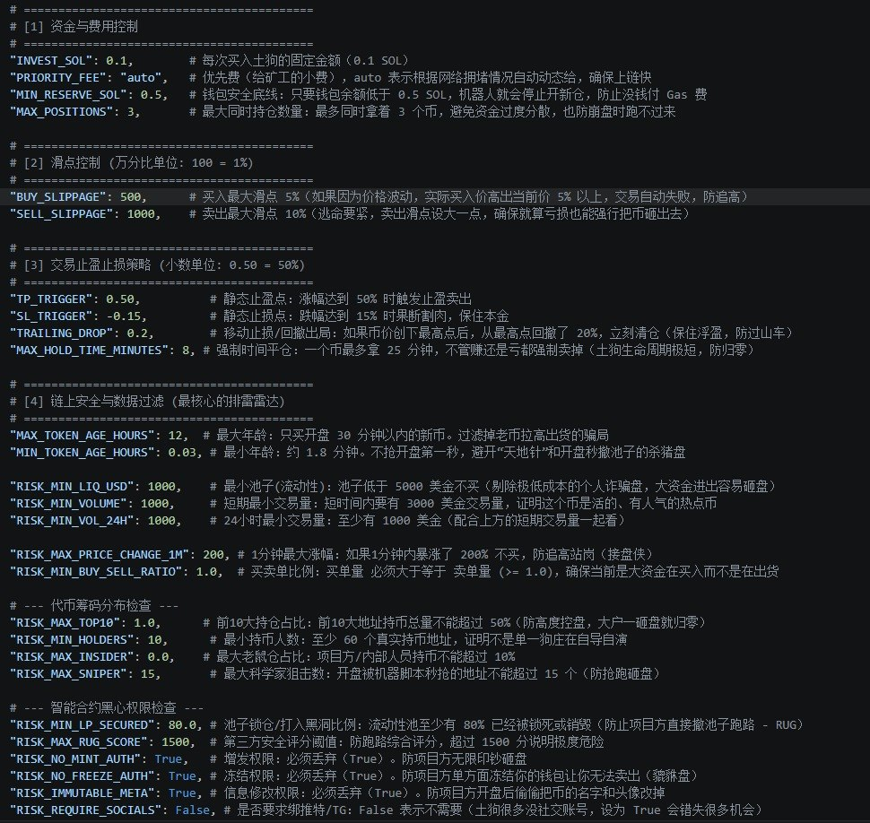

专为 Solana 土狗盘（含 Pump.fun）打造的高频自动化狙击与全自动止盈止损系统。秒级抓盘、5 秒询价、5 重出局、模拟盘/实盘一键切换。
看一万遍介绍不如看一张实跑 — 下面是从线上机器人实时截取的画面


为什么不只是又一个 sniper？
它内置了一套极其强悍的 【智能合约黑心权限风控雷达】：
非常丰富！所有核心参数都集中在代码顶部的 CONF 字典中，你可以自由调整：
INVEST_SOL）和钱包安全留存底线（MIN_RESERVE_SOL）。
CONF 字典的实拍：每个参数都附有详细中文注释，包括资金控制、滑点、5 重止盈止损策略、风控雷达等 20+ 项可调参数。即使你没有 Python 经验，也能根据自身交易风格逐项调整。从 0 到运行，5 分钟搞定
本机器人基于 Python 3.10+ 开发。请先确保你安装了 Python，然后打开终端（Terminal 或 CMD）运行以下命令，一键安装所有依赖库：
bashpip install asyncio aiohttp solders solana colorama python-dotenv curl_cffi requests在脚本同级目录下，新建一个名为 .env 的文本文件（注意前面有一个点），里面填入以下内容：
# 你的 Solana 钱包私钥 (Base58 格式，去 Phantom 或 Solflare 钱包导出)
SOL_PRIVATE_KEY=你的真实私钥
# 你的高级 RPC 节点地址 (强烈建议去 Helius 或 QuickNode 申请免费/付费专属节点，不要用公共节点)
RPC_URLS=https://mainnet.helius-rpc.com/?api-key=你的Key
# Telegram 通知配置（可选）
TG_BOT_TOKEN=你的TG机器人Token
TG_CHAT_ID=你的TG群或频道ID
# API 密钥配置（可选，有的话速度更快）
JUPITER_API_KEY=你的JUPAPIKEY.env 文件切勿上传到 GitHub、截图发群、分享给任何人。建议使用专门用于跑机器人的"热钱包"。打开终端，切换到脚本所在目录，执行以下命令即可：
bashpython sol_8.pytmux / screen / nohup 在服务器后台跑，关掉 SSH 也不会断。遇到问题先看这里
不提供任何形式的标准售后。
脚本体量约 70KB / 1000 行（去注释后），已完全开源，你可以逐行阅读、自行研究。
CONF 字典中，每个参数都附有详细注释，即使你没有代码经验，也能根据自己的交易风格调整仓位、滑点、风控阈值等。DRY_RUN: True 模拟盘模式下挂机 1–2 天，仔细阅读代码中各参数的注释，你会对这个系统有全新的理解。机器人为每个持仓代币启动了专属的独立监控线程，默认每 5 秒进行一次高频询价。同时，系统内置行情加速算法，当价格剧烈波动或逼近止盈止损线时，会自动提升询价频率至毫秒级，确保绝不漏掉任何一个逃生或暴富的机会！
风控门槛过高：请检查你的 CONF 里的风控参数。例如开盘年龄、最小流动性（RISK_MIN_LIQ_USD）、持币人数等，如果设置太严，机器人会把所有新币都过滤掉。
非常简单，只需要修改代码配置区（大概第 112 行）的一个开关：
"DRY_RUN": True（只打日志、模拟发 TG，不花真钱，自带 1% 模拟损耗）。"DRY_RUN": False（真刀真枪，直接调用 Jupiter 消耗钱包里的 SOL 上链交互）。"DRY_RUN": False）并首次启动前，请务必在脚本目录下删除以下两个文件：active_positions.json（持仓缓存）：你在模拟盘买入的那些币，其实钱包里并没有真币。如果不删掉这个文件，切到实盘后，机器人会以为你真的持有这些币，并尝试去链上真实卖出，结果肯定会一直报错"钱包余额不足"。trade_history.csv（交易账本）：这里面记录的是模拟盘的"假账"。如果不清空，它不仅会弄乱你后续真实的盈亏统计，还可能导致机器人误以为某个刚发的新币"已经买过了"，从而触发防重复买入机制，错失真的上车机会。
INVEST_SOL 改小（如 0.01），确认买卖流程无误后，再放大资金！不会，它有完美的 "记忆恢复机制"：
trade_history.csv 账本里，开机时会自动读取，绝不吃回头草。active_positions.json 缓存文件中，重启后脚本会自动无缝恢复监控，接管你的资产。DRY_RUN: True 模式下挂机运行 1~2 天，熟悉机器人的出局逻辑与 TG 播报后，再考虑小资金切入实盘。DYOR！